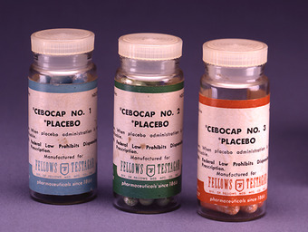
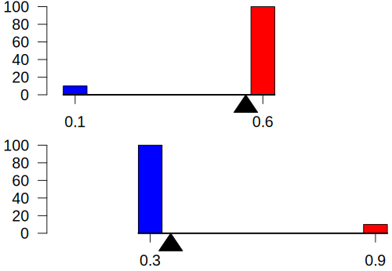
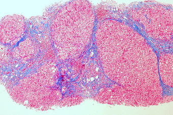
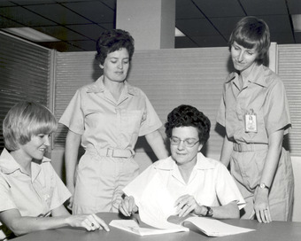

Table of Contents
2. Statistics in Practice
2.1. Observational Studies
2.1.1. What are Observational Studies?
2.1.2. The Clofibrate Trial
2.1.3. Confounding
2.1.4. Sex Bias in Graduate Admissions
2.2. Controlled Experiments
2.2.1. The Salk Vaccine Field Trial
2.2.2. The Portacaval Shunt
2.2.3. Statistical Controls
2. Statistics in Practice
2.1. Observational Studies
2.1.1. What are Observational Studies?
An observational study is one in which no variables can be manipulated or controlled by the investigator.
Learning Objective
Identify situations in which observational studies are necessary and the challenges that arise in their interpretation.
Key Points
- An observational study is in contrast with experiments, such as randomized controlled trials, where each subject is randomly assigned to a treated group or a control group.
- Variables may be uncontrollable because 1) a randomized experiment would violate ethical standards, 2) the investigator may simply lack the requisite influence, or 3) a randomized experiment may be impractical.
- Observational studies can never identify causal relationships because even though two variables are related both might be caused by a third, unseen, variable.
- A major challenge in conducting observational studies is to draw inferences that are acceptably free from influences by overt biases, as well as to assess the influence of potential hidden biases.
- A major challenge in conducting observational studies is to draw inferences that are acceptably free from influences by overt biases, as well as to assess the influence of potential hidden biases.
Key Terms
- causality
- the relationship between an event (the cause) and a second event (the effect), where the second event is understood as a consequence of the first
- observational study
- a study drawing inferences about the possible effect of a treatment on subjects, where the assignment of subjects into a treated group versus a control group is outside the control of the investigator
A common goal in statistical research is to investigate causality, which is the relationship between an event (the cause) and a second event (the effect), where the second event is understood as a consequence of the first. There are two major types of causal statistical studies: experimental studies and observational studies. An observational study draws inferences about the possible effect of a treatment on subjects, where the assignment of subjects into a treated group versus a control group is outside the control of the investigator. This is in contrast with experiments, such as randomized controlled trials, where each subject is randomly assigned to a treated group or a control group. In other words, observational studies have no independent variables -- nothing is manipulated by the experimenter. Rather, observations have the equivalent of two dependent variables.
In an observational study, the assignment of treatments may be beyond the control of the investigator for a variety of reasons:
- A randomized experiment would violate ethical standards: Suppose one wanted to investigate the abortion – breast cancer hypothesis, which postulates a causal link between induced abortion and the incidence of breast cancer. In a hypothetical controlled experiment, one would start with a large subject pool of pregnant women and divide them randomly into a treatment group (receiving induced abortions) and a control group (bearing children), and then conduct regular cancer screenings for women from both groups. Needless to say, such an experiment would run counter to common ethical principles. The published studies investigating the abortion–breast cancer hypothesis generally start with a group of women who already have received abortions. Membership in this "treated" group is not controlled by the investigator: the group is formed after the "treatment" has been assigned.
- The investigator may simply lack the requisite influence: Suppose a scientist wants to study the public health effects of a community-wide ban on smoking in public indoor areas. In a controlled experiment, the investigator would randomly pick a set of communities to be in the treatment group. However, it is typically up to each community and/or its legislature to enact a smoking ban. The investigator can be expected to lack the political power to cause precisely those communities in the randomly selected treatment group to pass a smoking ban. In an observational study, the investigator would typically start with a treatment group consisting of those communities where a smoking ban is already in effect.
- A randomized experiment may be impractical: Suppose a researcher wants to study the suspected link between a certain medication and a very rare group of symptoms arising as a side effect. Setting aside any ethical considerations, a randomized experiment would be impractical because of the rarity of the effect. There may not be a subject pool large enough for the symptoms to be observed in at least one treated subject. An observational study would typically start with a group of symptomatic subjects and work backwards to find those who were given the medication and later developed the symptoms
Usefulness and Reliability of Observational Studies
Observational studies can never identify causal relationships because even though two variables are related both might be caused by a third, unseen, variable. Since the underlying laws of nature are assumed to be causal laws, observational findings are generally regarded as less compelling than experimental findings.
Observational studies can, however:
- Provide information on "real world" use and practice
- Detect signals about the benefits and risks of the use of practices in the general population
- Help formulate hypotheses to be tested in subsequent experiments
- Provide part of the community-level data needed to design more informative pragmatic clinical trials
- Inform clinical practice
A major challenge in conducting observational studies is to draw inferences that are acceptably free from influences by overt biases, as well as to assess the influence of potential hidden biases.
{kind=link}
Nature Observation and Study Hall in The Natural and Cultural Gardens, The Expo Memorial Park, Suita city, Osaka, Japan. Observational studies are a type of experiments in which the variables are outside the control of the investigator.
2.1.2. The Clofibrate Trial
The Clofibrate Trial was a placebo-controlled study to determine the safety and effectiveness of drugs treating coronary heart disease in men.
Learning Objective
Outline how the use of placebos in controlled experiments leads to more reliable results.
Key Points
- Clofibrate was one of four lipid-modifying drugs tested in an observational study known as the Coronary Drug Project.
- Placebo-controlled studies are a way of testing a medical therapy in which, in addition to a group of subjects that receives the treatment to be evaluated, a separate control group receives a sham "placebo" treatment which is specifically designed to have no real effect.
- The purpose of the placebo group is to account for the placebo effect -- that is, effects from treatment that do not depend on the treatment itself.
- Appropriate use of a placebo in a clinical trial often requires, or at least benefits from, a double-blind study design, which means that neither the experimenters nor the subjects know which subjects are in the "test group" and which are in the "control group. ".
- The use of placebos is a standard control component of most clinical trials which attempt to make some sort of quantitative assessment of the efficacy of medicinal drugs or treatments.
Key Terms
- regression to the mean
- the phenomenon by which extreme examples from any set of data are likely to be followed by examples which are less extreme; a tendency towards the average of any sample
- placebo
- an inactive substance or preparation used as a control in an experiment or test to determine the effectiveness of a medicinal drug
- placebo effect
- the tendency of any medication or treatment, even an inert or ineffective one, to exhibit results simply because the recipient believes that it will work
Clofibrate (tradename Atromid-S) is an organic compound that is marketed as a fibrate. It is a lipid-lowering agent used for controlling the high cholesterol and triacylglyceride level in the blood. Clofibrate was one of four lipid-modifying drugs tested in an observational study known as the Coronary Drug Project. Also known as the World Health Organization Cooperative Trial on Primary Prevention of Ischaemic Heart Disease, the study was a randomized, multi-center, double-blind, placebo-controlled trial that was intended to study the safety and effectiveness of drugs for long-term treatment of coronary heart disease in men.
Placebo-Controlled Observational Studies
Placebo-controlled studies are a way of testing a medical therapy in which, in addition to a group of subjects that receives the treatment to be evaluated, a separate control group receives a sham "placebo" treatment which is specifically designed to have no real effect. Placebos are most commonly used in blinded trials, where subjects do not know whether they are receiving real or placebo treatment.
The purpose of the placebo group is to account for the placebo effect -- that is, effects from treatment that do not depend on the treatment itself. Such factors include knowing one is receiving a treatment, attention from health care professionals, and the expectations of a treatment's effectiveness by those running the research study. Without a placebo group to compare against, it is not possible to know whether the treatment itself had any effect.
Appropriate use of a placebo in a clinical trial often requires, or at least benefits from, a double-blind study design, which means that neither the experimenters nor the subjects know which subjects are in the "test group" and which are in the "control group. " This creates a problem in creating placebos that can be mistaken for active treatments. Therefore, it can be necessary to use a psychoactive placebo, a drug that produces physiological effects that encourage the belief in the control groups that they have received an active drug.
Patients frequently show improvement even when given a sham or "fake" treatment. Such intentionally inert placebo treatments can take many forms, such as a pill containing only sugar, a surgery where nothing is actually done, or a medical device (such as ultrasound) that is not actually turned on. Also, due to the body's natural healing ability and statistical effects such as regression to the mean, many patients will get better even when given no treatment at all. Thus, the relevant question when assessing a treatment is not "does the treatment work? " but "does the treatment work better than a placebo treatment, or no treatment at all? "
Therefore, the use of placebos is a standard control component of most clinical trials which attempt to make some sort of quantitative assessment of the efficacy of medicinal drugs or treatments.
Results of The Coronary Drug Project
Those in the placebo group who adhered to the placebo treatment (took the placebo regularly as instructed) showed nearly half the mortality rate as those who were not adherent. A similar study of women found survival was nearly 2.5 times greater for those who adhered to their placebo. This apparent placebo effect may have occurred because:
- Adhering to the protocol had a psychological effect, i.e. genuine placebo effect.
- People who were already healthier were more able or more inclined to follow the protocol.
- Compliant people were more diligent and health-conscious in all aspects of their lives.
The Coronary Drug Project found that subjects using clofibrate to lower serum cholesterol observed excess mortality in the clofibrate-treated group despite successful cholesterol lowering (47% more deaths during treatment with clofibrate and 5% after treatment with clofibrate) than the non-treated high cholesterol group. These deaths were due to a wide variety of causes other than heart disease, and remain "unexplained".
Clofibrate was discontinued in 2002 due to adverse affects.
{kind=link}
Prescription placebos used in research and practice.
2.1.3. Confounding
A confounding variable is an extraneous variable in a statistical model that correlates with both the dependent variable and the independent variable.
Learning Objective
Break down why confounding variables may lead to bias and spurious relationships and what can be done to avoid these phenomenons.
Key Points
- A perceived relationship between an independent variable and a dependent variable that has been misestimated due to the failure to account for a confounding factor is termed a spurious relationship.
- Confounding by indication - the most important limitation of observational studies - occurs when prognostic factors cause bias, such as biased estimates of treatment effects in medical trials.
- Confounding variables may also be categorised according to their source: such as operational confounds, procedural confounds or person confounds.
- A reduction in the potential for the occurrence and effect of confounding factors can be obtained by increasing the types and numbers of comparisons performed in an analysis.
- Moreover, depending on the type of study design in place, there are various ways to modify that design to actively exclude or control confounding variables.
Key Terms
- peer review
- the scholarly process whereby manuscripts intended to be published in an academic journal are reviewed by independent researchers (referees) to evaluate the contribution, i.e. the importance, novelty and accuracy of the manuscript's contents
- placebo effect
- the tendency of any medication or treatment, even an inert or ineffective one, to exhibit results simply because the recipient believes that it will work
- prognostic
- a sign by which a future event may be known or foretold
- confounding variable
- an extraneous variable in a statistical model that correlates (positively or negatively) with both the dependent variable and the independent variable
Example
- In risk assessments, factors such as age, gender, and educational levels often have impact on health status and so should be controlled. Beyond these factors, researchers may not consider or have access to data on other causal factors. An example is on the study of smoking tobacco on human health. Smoking, drinking alcohol, and diet are lifestyle activities that are related. A risk assessment that looks at the effects of smoking but does not control for alcohol consumption or diet may overestimate the risk of smoking. Smoking and confounding are reviewed in occupational risk assessments such as the safety of coal mining. When there is not a large sample population of non-smokers or non-drinkers in a particular occupation, the risk assessment may be biased towards finding a negative effect on health.
Confounding Variables
A confounding variable is an extraneous variable in a statistical model that correlates (positively or negatively) with both the dependent variable and the independent variable. A perceived relationship between an independent variable and a dependent variable that has been misestimated due to the failure to account for a confounding factor is termed a spurious relationship, and the presence of misestimation for this reason is termed omitted-variable bias.
As an example, suppose that there is a statistical relationship between ice cream consumption and number of drowning deaths for a given period. These two variables have a positive correlation with each other. An individual might attempt to explain this correlation by inferring a causal relationship between the two variables (either that ice cream causes drowning, or that drowning causes ice cream consumption). However, a more likely explanation is that the relationship between ice cream consumption and drowning is spurious and that a third, confounding, variable (the season) influences both variables: during the summer, warmer temperatures lead to increased ice cream consumption as well as more people swimming and, thus, more drowning deaths.
Types of Confounding
Confounding by indication has been described as the most important limitation of observational studies. Confounding by indication occurs when prognostic factors cause bias, such as biased estimates of treatment effects in medical trials. Controlling for known prognostic factors may reduce this problem, but it is always possible that a forgotten or unknown factor was not included or that factors interact complexly. Randomized trials tend to reduce the effects of confounding by indication due to random assignment.
Confounding variables may also be categorised according to their source:
- The choice of measurement instrument (operational confound) - This type of confound occurs when a measure designed to assess a particular construct inadvertently measures something else as well.
- Situational characteristics (procedural confound) - This type of confound occurs when the researcher mistakenly allows another variable to change along with the manipulated independent variable.
- Inter-individual differences (person confound) - This type of confound occurs when two or more groups of units are analyzed together (e.g., workers from different occupations) despite varying according to one or more other (observed or unobserved) characteristics (e.g., gender).
Decreasing the Potential for Confounding
A reduction in the potential for the occurrence and effect of confounding factors can be obtained by increasing the types and numbers of comparisons performed in an analysis. If a relationship holds among different subgroups of analyzed units, confounding may be less likely. That said, if measures or manipulations of core constructs are confounded (i.e., operational or procedural confounds exist), subgroup analysis may not reveal problems in the analysis.
Peer review is a process that can assist in reducing instances of confounding, either before study implementation or after analysis has occurred. Similarly, study replication can test for the robustness of findings from one study under alternative testing conditions or alternative analyses (e.g., controlling for potential confounds not identified in the initial study). Also, confounding effects may be less likely to occur and act similarly at multiple times and locations.
Moreover, depending on the type of study design in place, there are various ways to modify that design to actively exclude or control confounding variables:
- Case-control studies assign confounders to both groups, cases and controls, equally. In case-control studies, matched variables most often are age and sex.
- In cohort studies, a degree of matching is also possible, and it is often done by only admitting certain age groups or a certain sex into the study population. this creates a cohort of people who share similar characteristics; thus, all cohorts are comparable in regard to the possible confounding variable.
- Double blinding conceals the experiment group membership of the participants from the trial population and the observers. By preventing the participants from knowing if they are receiving treatment or not, the placebo effect should be the same for the control and treatment groups. By preventing the observers from knowing of their membership, there should be no bias from researchers treating the groups differently or from interpreting the outcomes differently.
- A randomized controlled trial is a method where the study population is divided randomly in order to mitigate the chances of self-selection by participants or bias by the study designers. Before the experiment begins, the testers will assign the members of the participant pool to their groups (control, intervention, parallel) using a randomization process such as the use of a random number generator.
2.1.4. Sex Bias in Graduate Admissions
The Berkeley study is one of the best known real life examples of an experiment suffering from a confounding variable.
Learning Objective
Illustrate how the phenomenon of confounding can be seen in practice via Simpson's Paradox.
Key Points
- A study conducted in the aftermath of a law suit filed against the University of California, Berkeley showed that men applying were more likely than women to be admitted.
- Examination of the aggregate data on admissions showed a blatant, if easily misunderstood, pattern of gender discrimination against applicants.
- When examining the individual departments, it appeared that no department was significantly biased against women.
- The study concluded that women tended to apply to competitive departments with low rates of admission even among qualified applicants, whereas men tended to apply to less-competitive departments with high rates of admission among the qualified applicants.
- Simpson's Paradox is a paradox in which a trend that appears in different groups of data disappears when these groups are combined, and the reverse trend appears for the aggregate data.
Key Terms
- partition
- a part of something that had been divided, each of its results
- Simpson's paradox
- a paradox in which a trend that appears in different groups of data disappears when these groups are combined, and the reverse trend appears for the aggregate data
- aggregate
- a mass, assemblage, or sum of particulars; something consisting of elements but considered as a whole
Women have traditionally had limited access to higher education. Moreover, when women began to be admitted to higher education, they were encouraged to major in less-intellectual subjects. For example, the study of English literature in American and British colleges and universities was instituted as a field considered suitable to women's "lesser intellects".
However, since 1991 the proportion of women enrolled in college in the U.S. has exceeded the enrollment rate for men, and that gap has widened over time. As of 2007, women made up the majority — 54 percent — of the 10.8 million college students enrolled in the U.S.
This has not negated the fact that gender bias exists in higher education. Women tend to score lower on graduate admissions exams, such as the Graduate Record Exam (GRE) and the Graduate Management Admissions Test (GMAT). Representatives of the companies that publish these tests have hypothesized that greater number of female applicants taking these tests pull down women's average scores. However, statistical research proves this theory wrong. Controlling for the number of people taking the test does not account for the scoring gap.
Sex Bias at the University of California, Berkeley
On February 7, 1975, a study was published in the journal Science by P.J. Bickel, E.A. Hammel, and J.W. O'Connell entitled "Sex Bias in Graduate Admissions: Data from Berkeley. " This study was conducted in the aftermath of a law suit filed against the University, citing admission figures for the fall of 1973, which showed that men applying were more likely than women to be admitted, and the difference was so large that it was unlikely to be due to chance.
Examination of the aggregate data on admissions showed a blatant, if easily misunderstood, pattern of gender discrimination against applicants.
Aggregate Data:
Men: 8,442 applicants - 44% admitted
Women: 4,321 applicants - 35% admitted
When examining the individual departments, it appeared that no department was significantly biased against women. In fact, most departments had a small but statistically significant bias in favor of women. The data from the six largest departments are listed below.
Department A
Men: 825 applicants - 62% admitted
Women: 108 applicants - 82% admitted
Department B
Men: 560 applicants - 63% admitted
Women: 25 applicants - 68% admitted
Department C
Men: 325 applicants - 37% admitted
Women: 593 applicants - 34% admitted
Department D
Men: 417 applicants - 33% admitted
Women: 375 applicants - 35% admitted
Department E
Men: 191 applicants - 28% admitted
Women: 393 applicants - 24% admitted
Department F
Men: 272 applicants - 6% admitted
Women: 341 applicants - 7% admitted
The research paper by Bickel et al. concluded that women tended to apply to competitive departments with low rates of admission even among qualified applicants (such as in the English Department), whereas men tended to apply to less-competitive departments with high rates of admission among the qualified applicants (such as in engineering and chemistry). The study also concluded that the graduate departments that were easier to enter at the University, at the time, tended to be those that required more undergraduate preparation in mathematics. Therefore, the admission bias seemed to stem from courses previously taken.
Confounding Variables and Simpson's Paradox
The above study is one of the best known real life examples of an experiment suffering from a confounding variable. In this particular case, we can see an occurrence of Simpson's Paradox . Simpson's Paradox is a paradox in which a trend that appears in different groups of data disappears when these groups are combined, and the reverse trend appears for the aggregate data. This result is often encountered in social-science and medical-science statistics, and is particularly confounding when frequency data are unduly given causal interpretations.
{kind=link}
An illustration of Simpson's Paradox.
The practical significance of Simpson's paradox surfaces in decision making situations where it poses the following dilemma: Which data should we consult in choosing an action, the aggregated or the partitioned? The answer seems to be that one should sometimes follow the partitioned and sometimes the aggregated data, depending on the story behind the data; with each story dictating its own choice.
As to why and how a story, not data, should dictate choices, the answer is that it is the story which encodes the causal relationships among the variables. Once we extract these relationships we can test algorithmically whether a given partition, representing confounding variables, gives the correct answer.
{kind=link}
One of the best real life examples of the presence of confounding variables occurred in a study regarding sex bias in graduate admissions here, at the University of California, Berkeley.
2.2. Controlled Experiments
2.2.1. The Salk Vaccine Field Trial
The Salk polio vaccine field trial incorporated a double blind placebo control methodolgy to determine the effectiveness of the vaccine.
Learning Objective
Demonstrate how controls and treatment groups are used in drug testing.
Key Points
- The first effective polio vaccine was developed in 1952 by Jonas Salk at the University of Pittsburgh.
- Roughly 440,000 people received one or more injections of the vaccine, about 210,000 children received a placebo, consisting of harmless culture media, and 1.2 million children received no vaccination and served as a control group, who would then be observed to see if any contracted polio.
- Two serious issues arose in the original experimental design: selection bias and diagnostic bias.
- The combination of randomized control and double-blind experimental factors, which were implemented in the second version of the experimental design, has become the gold standard for a clinical trial.
Key Terms
- control group
- the group of test subjects left untreated or unexposed to some procedure and then compared with treated subjects in order to validate the results of the test
- placebo
- an inactive substance or preparation used as a control in an experiment or test to determine the effectiveness of a medicinal drug
The Salk polio vaccine field trials constitute one of the most famous and one of the largest statistical studies ever conducted. The field trials are of particular value to students of statistics because two different experimental designs were used.
Background
The Salk vaccine, or inactivated poliovirus vaccine (IPV), is based on three wild, virulent reference strains:
- Mahoney (type 1 poliovirus),
- MEF-1 (type 2 poliovirus), and
- Saukett (type 3 poliovirus),
grown in a type of monkey kidney tissue culture (Vero cell line), which are then inactivated with formalin. The injected Salk vaccine confers IgG-mediated immunity in the bloodstream, which prevents polio infection from progressing to viremia and protects the motor neurons, thus eliminating the risk of bulbar polio and post-polio syndrome.
The 1954 Field Trial
Statistical tests of new medical treatments almost always have the same basic format. The responses of a treatment group of subjects who are given the treatment are compared to the responses of a control group of subjects who are not given the treatment. The treatment groups and control groups should be as similar as possible.
Beginning February 23, 1954, the vaccine was tested at Arsenal Elementary School and the Watson Home for Children in Pittsburgh, Pennsylvania. Salk's vaccine was then used in a test called the Francis Field Trial, led by Thomas Francis; the largest medical experiment in history. The test began with some 4,000 children at Franklin Sherman Elementary School in McLean, Virginia, and would eventually involve 1.8 million children, in 44 states from Maine to California. By the conclusion of the study, roughly 440,000 received one or more injections of the vaccine, about 210,000 children received a placebo, consisting of harmless culture media, and 1.2 million children received no vaccination and served as a control group, who would then be observed to see if any contracted polio.
The results of the field trial were announced April 12, 1955 (the 10th anniversary of the death of President Franklin D. Roosevelt, whose paralysis was generally believed to have been caused by polio). The Salk vaccine had been 60–70% effective against PV1 (poliovirus type 1), over 90% effective against PV2 and PV3, and 94% effective against the development of bulbar polio. Soon after Salk's vaccine was licensed in 1955, children's vaccination campaigns were launched. In the U.S, following a mass immunization campaign promoted by the March of Dimes, the annual number of polio cases fell from 35,000 in 1953 to 5,600 by 1957. By 1961 only 161 cases were recorded in the United States.
Experimental Design Issues
The original design of the experiment called for second graders (with parental consent) to form the treatment group and first and third graders to form the control group. This design was known as the observed control experiment.
Two serious issues arose in this design: selection bias and diagnostic bias. Because only second graders with permission from their parents were administered the treatment, this treatment group became self-selecting.
Thus, a randomized control design was implemented to overcome these apparent deficiencies. The key distinguishing feature of the randomized control design is that study subjects, after assessment of eligibility and recruitment, but before the intervention to be studied begins, are randomly allocated to receive one or the other of the alternative treatments under study. Therefore, randomized control tends to negate all effects (such as confounding variables) except for the treatment effect.
This design also had the characteristic of being double-blind. Double-blind describes an especially stringent way of conducting an experiment on human test subjects which attempts to eliminate subjective, unrecognized biases carried by an experiment's subjects and conductors. In a double-blind experiment, neither the participants nor the researchers know which participants belong to the control group, as opposed to the test group. Only after all data have been recorded (and in some cases, analyzed) do the researchers learn which participants were which.
This combination of randomized control and double-blind experimental factors has become the gold standard for a clinical trial.

Jonas Salk administers his polio vaccine on February 26, 1957 in the Commons Room of the Cathedral of Learning at the University of Pittsburgh where the vaccine was created by Salk and his team.
2.2.2. The Portacaval Shunt
Numerous studies have been conducted to examine the value of the portacaval shunt procedure, many using randomized controls.
Learning Objective
Assess the value that the practice of random assignment adds to experimental design.
Key Points
- A portacaval shunt is a treatment for the liver in which a connection is made between the portal vein, which supplies 75% of the liver's blood, and the inferior vena cava, the vein that drains blood from the lower two-thirds of the body.
- Of the studies on portacaval shunts, 63% were conducted without controls, 29% were conducted with non-randomized controls, and 8% were conducted with randomized controls.
- The thinking behind random assignment is that any effect observed between treatment groups can be linked to the treatment effect and cannot be considered a characteristic of the individuals in the group.
- Because most basic statistical tests require the hypothesis of an independent randomly sampled population, random assignment is the desired assignment method.
Key Terms
- shunt
- a passage between body channels constructed surgically as a bypass
- random assignment
- an experimental technique for assigning subjects to different treatments (or no treatment)
A portacaval shunt is a treatment for high blood pressure in the liver. A connection is made between the portal vein, which supplies 75% of the liver's blood, and the inferior vena cava, the vein that drains blood from the lower two-thirds of the body. The most common causes of liver disease resulting in portal hypertension are cirrhosis , caused by alcohol abuse, and viral hepatitis (hepatitis B and C). Less common causes include diseases such as hemochromatosis, primary biliary cirrhosis (PBC), and portal vein thrombosis. The procedure is long and hazardous .
{kind=link}
This image is a trichrome stain showing cirrhosis of the liver. Cirrhosis can be combatted by the portacaval shunt procedure, for which there have been numerous experimental trials using randomized assignment.
Numerous studies have been conducted to examine the value of and potential concerns with the surgery. Of these studies, 63% were conducted without controls, 29% were conducted with non-randomized controls, and 8% were conducted with randomized controls.
Randomized Controlled Experiments
Random assignment, or random placement, is an experimental technique for assigning subjects to different treatments (or no treatment). The thinking behind random assignment is that by randomizing treatment assignments, the group attributes for the different treatments will be roughly equivalent; therefore, any effect observed between treatment groups can be linked to the treatment effect and cannot be considered a characteristic of the individuals in the group.
In experimental design, random assignment of participants in experiments or treatment and control groups help to ensure that any differences between and within the groups are not systematic at the outset of the experiment. Random assignment does not guarantee that the groups are "matched" or equivalent, only that any differences are due to chance.
The steps to random assignment include:
- Begin with a collection of subjects - for example, 20 people.
- Devise a method of randomization that is purely mechanical (e.g. flip a coin).
- Assign subjects with "heads" to one group, the control group; assign subjects with "tails" to the other group, the experimental group.
Because most basic statistical tests require the hypothesis of an independent randomly sampled population, random assignment is the desired assignment method. It provides control for all attributes of the members of the samples—in contrast to matching on only one or more variables—and provides the mathematical basis for estimating the likelihood of group equivalence for characteristics one is interested in. This applies both for pre-treatment checks on equivalence and the evaluation of post treatment results using inferential statistics. More advanced statistical modeling can be used to adapt the inference to the sampling method.
2.2.3. Statistical Controls
A scientific control is an observation designed to minimize the effects of variables other than the single independent variable.
Learning Objective
Classify scientific controls and identify how they are used in experiments.
Key Points
- Scientific controls increase the reliability of test results, often through a comparison between control measurements and the other measurements.
- Positive and negative controls, when both are successful, are usually sufficient to eliminate most potential confounding variables.
- Negative controls are groups where no phenomenon is expected. They ensure that there is no effect when there should be no effect.
- Positive controls are groups where a phenomenon is expected. That is, they ensure that there is an effect when there should be an effect.
Key Terms
- confounding variable
- an extraneous variable in a statistical model that correlates (positively or negatively) with both the dependent variable and the independent variable
- scientific control
- an experiment or observation designed to minimize the effects of variables other than the single independent variable
What Is a Control?
A scientific control is an observation designed to minimize the effects of variables other than the single independent variable. This increases the reliability of the results, often through a comparison between control measurements and the other measurements.
For example, during drug testing, scientists will try to control two groups to keep them as identical as possible, then allow one group to try the drug. Another example might be testing plant fertilizer by giving it to only half the plants in a garden: the plants that receive no fertilizer are the control group, because they establish the baseline level of growth that the fertilizer-treated plants will be compared against. Without a control group, the experiment cannot determine whether the fertilizer-treated plants grow more than they would have if untreated.
Ideally, all variables in an experiment will be controlled (accounted for by the control measurements) and none will be uncontrolled. In such an experiment, if all the controls work as expected, it is possible to conclude that the experiment is working as intended and that the results of the experiment are due to the effect of the variable being tested. That is, scientific controls allow an investigator to make a claim like "Two situations were identical until factor X occurred. Since factor X is the only difference between the two situations, the new outcome was caused by factor X. "
Controlled Experiments
Controlled experiments can be performed when it is difficult to exactly control all the conditions in an experiment. In this case, the experiment begins by creating two or more sample groups that are probabilistically equivalent, which means that measurements of traits should be similar among the groups and that the groups should respond in the same manner if given the same treatment. This equivalency is determined by statistical methods that take into account the amount of variation between individuals and the number of individuals in each group. In fields such as microbiology and chemistry, where there is very little variation between individuals and the group size is easily in the millions, these statistical methods are often bypassed and simply splitting a solution into equal parts is assumed to produce identical sample groups.
Types of Controls
The simplest types of control are negative and positive controls. These two controls, when both are successful, are usually sufficient to eliminate most potential confounding variables. This means that the experiment produces a negative result when a negative result is expected and a positive result when a positive result is expected.
Negative Controls
Negative controls are groups where no phenomenon is expected. They ensure that there is no effect when there should be no effect. To continue with the example of drug testing, a negative control is a group that has not been administered the drug. We would say that the control group should show a negative or null effect.
If the treatment group and the negative control both produce a negative result, it can be inferred that the treatment had no effect. If the treatment group and the negative control both produce a positive result, it can be inferred that a confounding variable acted on the experiment, and the positive results are likely not due to the treatment.
Positive Controls
Positive controls are groups where a phenomenon is expected. That is, they ensure that there is an effect when there should be an effect. This is accomplished by using an experimental treatment that is already known to produce that effect and then comparing this to the treatment that is being investigated in the experiment.
Positive controls are often used to assess test validity. For example, to assess a new test's ability to detect a disease, then we can compare it against a different test that is already known to work. The well-established test is the positive control, since we already know that the answer to the question (whether the test works) is yes.
For difficult or complicated experiments, the result from the positive control can also help in comparison to previous experimental results. For example, if the well-established disease test was determined to have the same effectiveness as found by previous experimenters, this indicates that the experiment is being performed in the same way that the previous experimenters did.
When possible, multiple positive controls may be used. For example, if there is more than one disease test that is known to be effective, more than one might be tested. Multiple positive controls also allow finer comparisons of the results (calibration or standardization) if the expected results from the positive controls have different sizes.
{kind=link}
An all-female crew of scientific experimenters began a five-day exercise on December 16, 1974. They conducted 11 selected experiments in materials science to determine their practical application for Spacelab missions and to identify integration and operational problems that might occur on actual missions. Air circulation, temperature, humidity and other factors were carefully controlled.